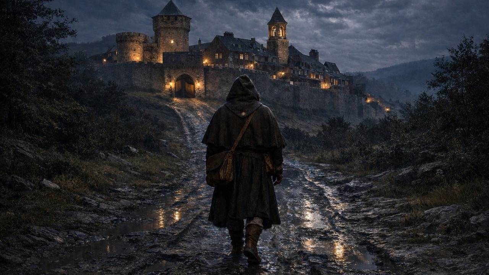
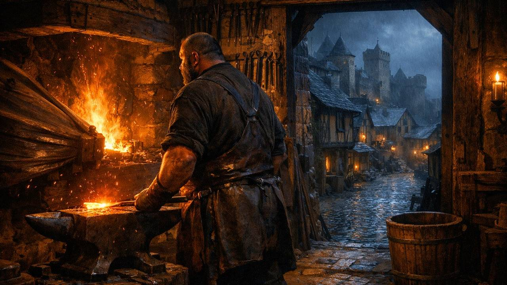
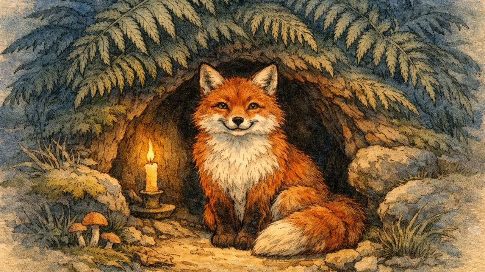

Le Messager de Corbeval
Il pleut sur la route de Corbeval. Vous êtes messager du roi, et contre votre poitrine, une lettre scellée doit être remise au seigneur avant minuit. Quelqu’un, dans ses murs, ne veut pas qu’il la lise.

Mettez votre casque, ou montez le son : l’histoire commence. Rêverie, ce sont des histoires audio illustrées où c’est vous qui décidez de la suite. Une voix vous raconte, les personnages lui répondent, la pluie et le vent vous entourent — et à chaque moment clé, vous choisissez. Deux histoires complètes sont offertes, avec plusieurs fins chacune.
Rêverie se lit avec les oreilles. Un narrateur et les voix des personnages portent l’histoire, et autour d’eux, tout un monde sonore : l’orage sur les remparts, le marteau de la forge, les chansons d’un conte. À l’écran, chaque lieu a son illustration, qui s’anime doucement à la lueur des chandelles et des lanternes.
Quand l’histoire vous laisse la main, deux grandes cartes s’affichent, à gauche et à droite, et sont lues à voix haute. Montrer le sceau du roi au garde, ou vous dire simple marchand ? Vos décisions changent la suite, et la fin.
Deux histoires complètes sont gratuites dès la sortie. D’autres viendront régulièrement s’ajouter à la bibliothèque.
Deux histoires gratuites
Il pleut sur la route de Corbeval. Vous êtes messager du roi, et contre votre poitrine, une lettre scellée doit être remise au seigneur avant minuit. Quelqu’un, dans ses murs, ne veut pas qu’il la lise.

Le vieux roi ne dort plus, et tout le royaume s’en inquiète. Une petite fille en sabots se met en route. Un conte doux, ponctué de chansons, à écouter au lit ou en famille.
Deux nouvelles histoires sont sorties sur Steam, à 1,99 € chacune : Minuit à Valcombe, une enquête dans un manoir coupé du monde par la neige, la veille de Noël 1932, et Le Pain du dernier matin, un matin d’automne à Pompéi, en l’an 79. Environ 25 minutes chacune.
D’autres histoires arriveront ensuite, régulièrement.
Images des histoires






En bref
FAQ
Oui. Le jeu est gratuit sur Steam, l’App Store et Google Play, avec deux histoires complètes : Le Messager de Corbeval et Le Roi qui ne dormait plus. Il n’y a aucune publicité.
On écoute. Quand vient un choix, deux cartes s’affichent à gauche et à droite, et sont lues à voix haute : on touche celle qu’on veut sur téléphone et tablette, on clique ou on utilise le clavier ou la manette sur ordinateur. Dans certains lieux, on choisit aussi où aller.
Non. Au casque ou sur les haut-parleurs du téléphone ou de l’ordinateur, comme vous préférez. Le casque rapproche l’orage ; le haut-parleur permet d’écouter à plusieurs.
Le Roi qui ne dormait plus est un conte doux, pour petits et grands, à écouter ensemble. Le Messager de Corbeval est plus tendu : une nuit d’orage, des secrets et des menaces, plutôt pour les grands.
Non. Ni publicité, ni outil de mesure d’audience, ni donnée personnelle : votre progression reste sur votre appareil. Le détail est dans la politique de confidentialité.
Sur Windows et Mac par Steam, et sur Android par Google Play. La version iPhone et iPad (App Store) arrive bientôt.
Écrivez-moi à contact@petitvaisseau.com : je lis tout et je réponds moi-même.